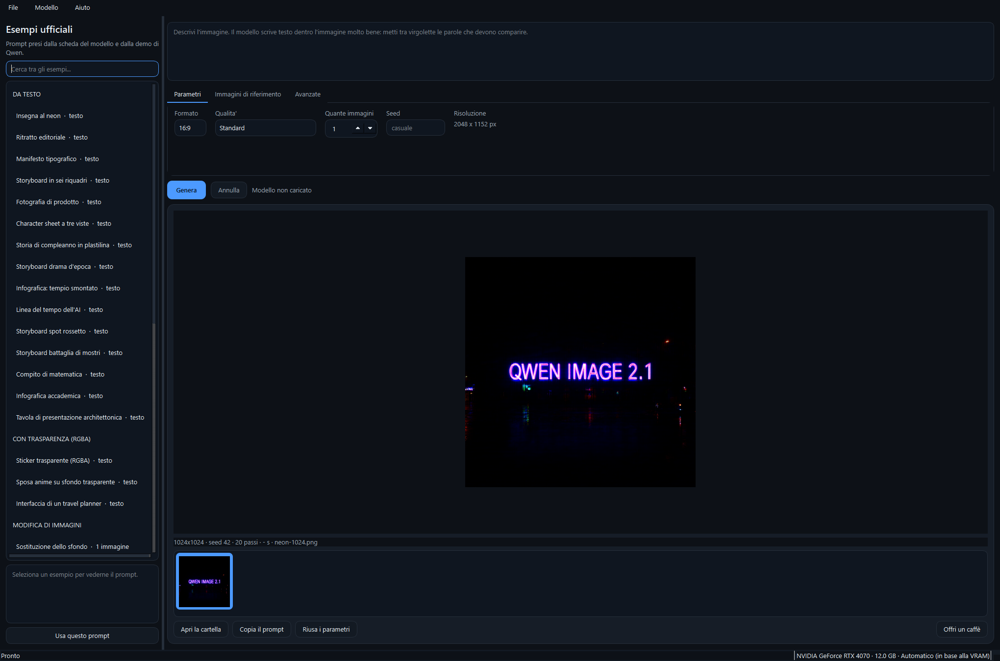

Image Creator Free
Immagini generate con Qwen-Image-2.1, sul tuo computer.
Scrivi cosa vuoi vedere e premi Genera: il modello gira sulla tua scheda video, le immagini restano sul tuo disco. Niente account, niente abbonamento, niente crediti da comprare. Windows, open source, gratuito.
- Windows 10/11 a 64 bit
- NVIDIA da 8 GB di VRAM
- 33 GB di disco
- MIT
- Nessuna telemetria

Cosa fa
Testo → immagine
Fino a 2048x2048, nei sette formati previsti dal modello: quadrato, 4:3, 3:4, 3:2, 2:3, 16:9, 9:16.
Scrive davvero le parole
Qwen-Image-2.1 è nato per la tipografia: insegne, manifesti, didascalie. Metti tra virgolette il testo che deve comparire e lo trovi nell'immagine.
Sfondo trasparente
Immagini RGBA native, con il canale alpha: sticker e loghi già ritagliati, senza passare da un programma di fotoritocco.
Modifica con riferimenti
Trascina fino a dieci immagini e citale nel prompt: cambia uno sfondo, monta una foto di gruppo, arreda una stanza con oggetti tuoi.
40 esempi pronti
I prompt della scheda del modello e della demo ufficiale di Qwen, tradotti nei titoli e caricabili con un clic.
Galleria con memoria
Seed, passi e parametri restano dentro il PNG: "Riusa i parametri" rimette tutto com'era e cambi solo quello che vuoi.
Tre esempi, dalla demo ufficiale
Sono già dentro il programma: si scelgono dall'elenco a sinistra.
Insegna al neon
Testo nell'immagine, riflessi sull'asfalto bagnato.
A neon shop sign that reads "QWEN IMAGE 2.1", rainy night,
reflections on wet pavement
Sticker trasparente
Il formato consigliato per ottenere il canale alpha.
This is an RGBA image with transparency. A cute cartoon dragon
sticker. The image has alpha channel and the background is transparent.
Ritratto editoriale
Luce naturale, grana fotografica, niente scritte.
Create an editorial portrait of a botanist in a sunlit
greenhouse, surrounded by ferns and delicate orchids...
Cosa serve
| Scheda video | NVIDIA da 8 GB di VRAM in su. Il modello occupa 33 GB: sotto i 20 GB di VRAM resta in RAM e viene spostato sulla scheda un pezzo alla volta - funziona bene, ma è più lento. Senza GPU gira sulla CPU, con decine di minuti per immagine. |
|---|---|
| RAM | 32 GB consigliati. Con 16 GB funziona, ma il sistema usa molto il file di scambio. |
| Disco | 3 GB per l'ambiente di calcolo e 33 GB per il modello. La cartella del modello la scegli al primo avvio, anche su un altro disco. |
| Rete | Solo per i due download iniziali. Dopo, il programma funziona anche offline. |
| Windows | 10 o 11, a 64 bit. Non serve avere Python: se manca, il programma ne scarica una copia dedicata e non tocca quello che hai già installato. |
Installazione
Scarica l'installer ed eseguilo. Al primo avvio il programma prepara da solo l'ambiente di calcolo (PyTorch e diffusers, circa 3 GB); il modello viene scaricato alla prima generazione.
I file non sono firmati: la prima volta Windows SmartScreen avvisa, si passa con Ulteriori informazioni → Esegui comunque. Le impronte SHA-256 di ogni rilascio sono pubblicate nella pagina della release.
Dai sorgenti:
git clone https://github.com/bdbais/image-creator-free
cd image-creator-free
pip install -r requirements.txt
python ImageCreatorFree.pywPrivacy
Nessun account, nessuna telemetria, nessun server di mezzo. I prompt e le immagini non lasciano il computer. Il programma apre la rete solo per scaricare il modello da Hugging Face e le librerie da PyPI la prima volta.
Il modello Qwen-Image-2.1 è distribuito con la Qwen Research License: l'uso è consentito per ricerca e valutazione, non per scopi commerciali. Questo programma è open source (MIT) e non ridistribuisce il modello: lo scarichi tu, da Hugging Face.
Sostieni il progetto
Image Creator Free è gratuito e open source, e lo resterà. Se ti fa risparmiare tempo, puoi offrire un caffè a chi lo mantiene. Nessun obbligo: nel programma non cambia niente.